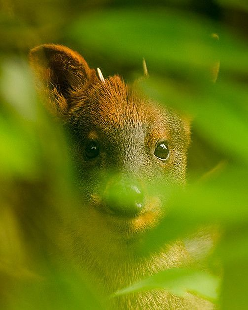
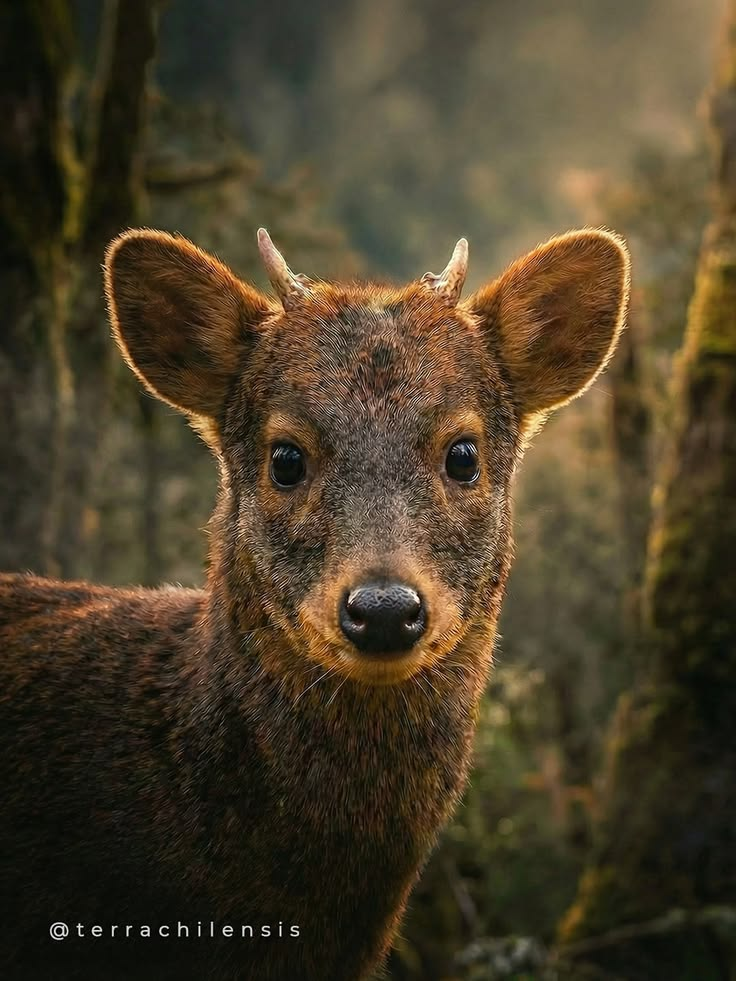

Galería de Imágenes del Pudú

Pudú en su entorno natural.

Ejemplar de pudú adulto.

Pudú en zona boscosa.

Pudú observando su entorno.

Pudú en estado de conservación.
EL ciervo mas pequeño del mundo
Pudú en su entorno natural.
Ejemplar de pudú adulto.
Pudú en zona boscosa.

Pudú observando su entorno.

Pudú en estado de conservación.